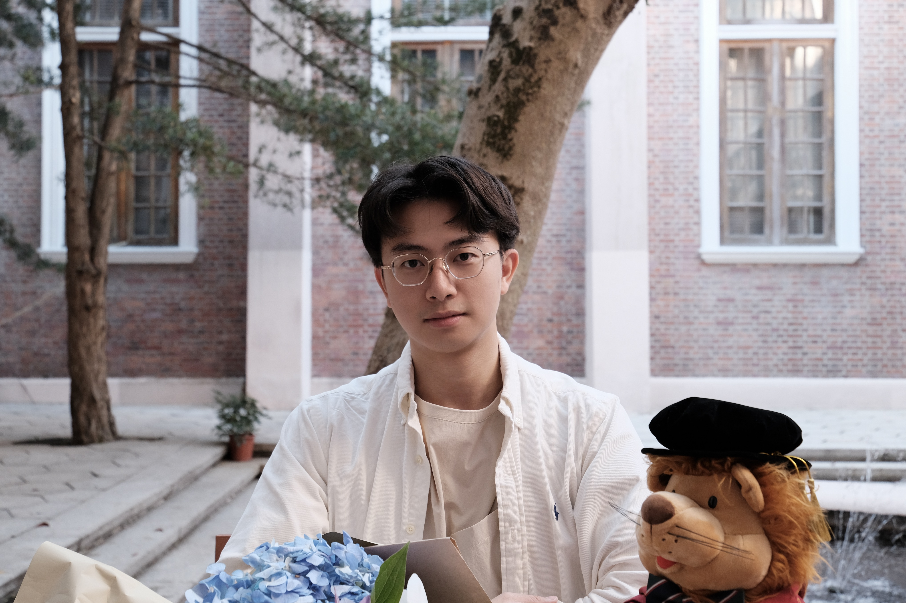
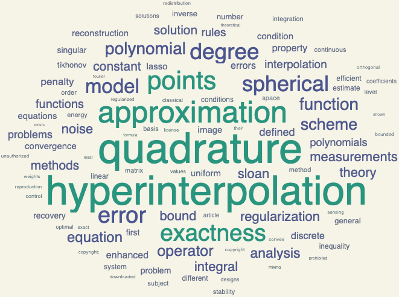

Hao-Ning Wu
Postdoctoral Research and Teaching Associate  About I have been a postdoctoral associate at the Department of Mathematics, University of Georgia since August 2024, working with Prof. Weiwei Hu. Prior to this position, I was a postdoctoral fellow at the Department of Mathematics, University of Hong Kong, mentored by Prof. Dong Li. I obtained my PhD degree from the University of Hong Kong in 2023, under the supervision of Prof. Xiaoming Yuan, and completed my BSc degree at Jinan University, Guangzhou, China in 2019, both in mathematics. My research focuses on the mathematical foundations of sampling, discretization, and approximation for problems in continuous mathematics. Broadly in analysis and applied mathematics, my research areas lie in the following closely related fields: My curriculum vitae. News Travel Plans Research Repository
See my publications and codes in the databases above or the full list below (click to open):
Here is a word cloud generated from the text data of my research articles using the Text Analytics Toolbox in MATLAB (Apr 2026)
 More about Me
Every Chinese name carries a specific and unique meaning, and mine is no exception. Hao (浩) signifies "vast and torrential water," while Ning (宁) represents "to pacify and stabilize." Thus, my name, Hao-Ning, depicts a scene where mighty water finally finds serenity.
Department of Mathematics
University of Georgia
Athens, GA 30602
Email xxxx@connect.hku.hk (preferred, including review invitations) and xxxx@uga.edu (institutional email), where xxxx = hnwu
Office 627A Boyd Research and Education Center
Office hours Tue/Thu 3pm - 4pm in Spring 2026
Photo taken at HKU Main Building in Dec 2023 (More Photos)
❏ Sampling theory, approximation theory, and applied harmonic analysis.
❏ Constructive approximation approaches for PDEs and integral equations.
❏ Control and optimization of systems governed by PDEs and integral equations.
Complete list of publications
Submitted. arXiv:2606.23409.
Submitted. arXiv:2605.17739.
Submitted. arXiv:2510.22703.
Proceedings of 2026 American Control Conference (ACC), to appear.
Submitted. arXiv:2411.16584.
Submitted. arXiv: 2305.04820.
Appl. Math. Lett., 182 (2026), 110033.
SIAM J. Numer. Anal., 64 (2026), 148-169. 
Dolomites Res. Notes Approx., 18.1 (2025), 135-145.
J. Approx. Theory, 299 (2024), 106013.
J. Complexity, 80 (2024), 101789. 
PhD Thesis (2023). The University of Hong Kong. HKU Theses Online.
Inverse Probl., 39 (2023), 075005. 
BIT Numer. Math., 62 (2022), 1899-1919. 
Appl. Comput. Harmon. Anal., 61 (2022), 319-346. 
SIAM J. Sci. Comput., 43 (2021), A3967–A3991. 
Inverse Probl., 37 (2021), 015008.
I am originally from Wanxian, Sichuan (now Wanzhou district, Chongqing), a city nestled on the banks of the Yangtze River in southwestern China. It lies on the eastern rim of the Sichuan Basin, where the Upper Yangtze River turns from a northeastern to an eastward course. Just beyond this bend, the river begins her legendary passage through the majestic mountains, carving out the famously known Three Gorges.
I love exploring the world, especially by air and road. I am also an avid museum enthusiast, particularly drawn to museums dedicated to natural and human history. Yet, I find little appeal in the realm of postmodern art.
I appreciate the Hardy–Littlewood tradition of alphabetical authorship.
... My Erdős number is 3:
❏ Paul Erdős - Charles K. Chui - Ming-Jun Lai - W.
菩萨妖精，总是一念。
若论本来，皆属无有。
All distinctions arise from a single thought;
at the root, there is nothing.
{kind=link}
{kind=link}